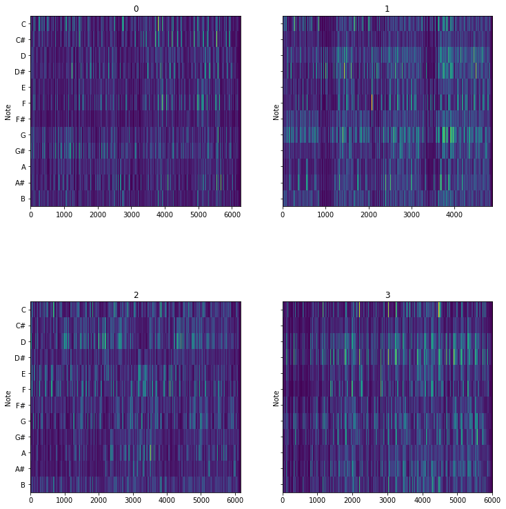
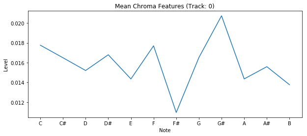
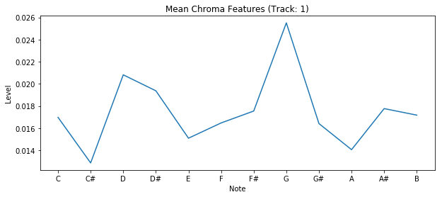
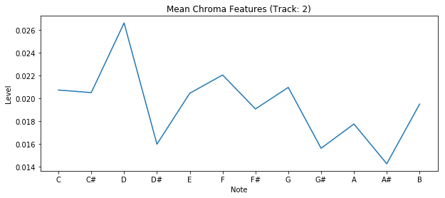
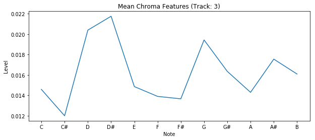

My Music Encoding Project
Project Dataset: Adele
Chroma Features Plot for 4 Songs

Track 0 - Hello
Track 1 - Rolling In The Deep
Track 2 - Set Fire To The Rain
Track 3 - When We Were Young
Chroma Features Graphs at Time 456



